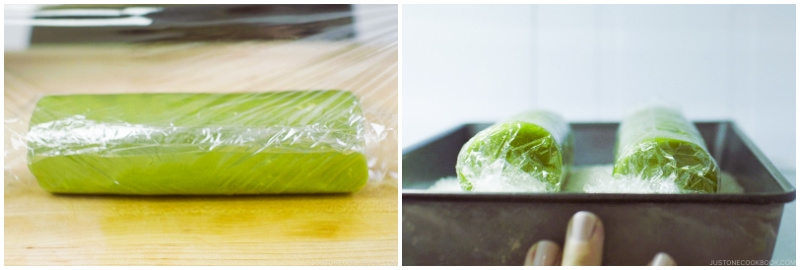
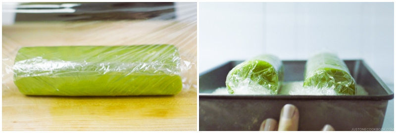

Matcha Cookies
Origin: Japanese Source: https://www.justonecookbook.com/green-tea-white-chocolate-cookies/ Category: Dessert
These cookies have the perfect flavor balance of the earthiness from the matcha and the sweetness and creaminess from the white chocolate chips. They are crispy and sweet, perfect for an afternoon snack or dessert. Enjoy with a cup of tea!
Recipe Ingredients
- All purpose flour
- Matcha powder
- Unsalted butter
- Kosher salt
- Confectioners sugar
- Egg yolks
- White chocolate chips
Recipe Steps
- Combine flour and matcha powder in large bowl Sift the flour and matcha powder
- Beat softened butter until smooth and creamy
- Add salt and blend
- Add sugar and beat until soft and light
- Add egg yolks and mix until well combined
- Gradually add flour and matcha mixture and mix until well combined
- Add chocolate chips and mix until incorporated
- Divide dough into two pieces. Shape each piece into cylinders about 1.5in in diameter
- Wrap logs in plastic wrap and chill in fridge for at least two hours
- Slice into ⅓ inch rounds and place on a baking tray lined with parchment paper
- Bake at 350 degrees for 15 minutes
Additional Food images

 
